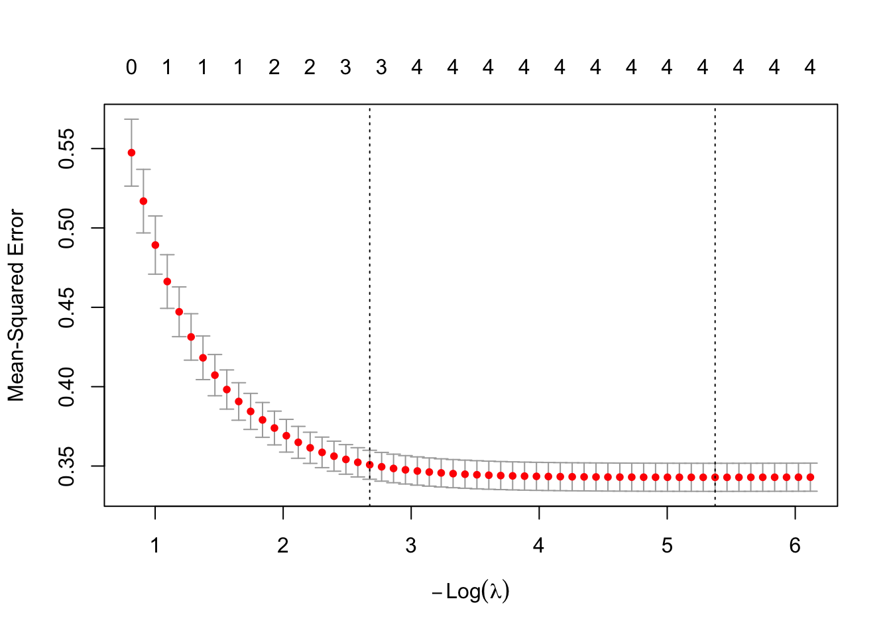

set.seed(8675309)
n <- nrow(big5)
# Create a random index of which rows will be in the training data
train_index <- sample(1:n, size = floor(0.5 * n))
train_data <- big5[train_index, ] # subsets big5 training data
test_data <- big5[-train_index, ] # subsets big5 testing data
# Note: '-train_index' means all rows that DON'T include these valuesPrediction
Introduction
Most of this course has focused on inference, which involves using a model to make conclusions about population-level relationships. But there is another goal in regression: prediction. For predictive models, we are often less concerned with how well the model fits the data we already have, and more concerned with how well it will perform on new, unseen data. A model can fit the current dataset very well simply by capturing noise (overfitting), but this does not guarantee it will generalize to future datasets.
In this lesson we will cover cross-validation methods for evaluating predictive accuracy, variable selection techniques for building optimal models, prediction intervals, and LASSO regression.
Note, prior we’ve used the term “prediction” to mean getting predicted scores from a regression model, but in this case “prediction” has a specific connotation about minimizing predictive error. So when, previously, I’ve said “use X to predict Y”, were were doing prediction, but not with a model specifically tailored for accurate prediction.
The shift in focus is now we are trying to get as accurate as a prediction to new, unseen datasets as possible. To do this, we need to minimize error (aka, how far off our prediction would be from the true new value). We’ll go over many methods on how to minimize this prediction error.
The Dataset
For this lesson we continue with the Big 5 personality dataset, predicting ExistentialWellBeing from the five personality traits:
ExistentialWellBeing— how well would you rate your existential well being (1–5 scale)OpenMindedness— how open minded you are (1–5 scale)Conscientiousness— how conscientious you are (1–5 scale)Extraversion— how extroverted you are (1–5 scale)Agreeableness— how agreeable you are (1–5 scale)NegativeEmotionality— how neurotic you are (1–5 scale)
1. Cross-Validation and Shrunken R
What Is Cross-Validation?
Cross-validation is a method for evaluating how well a model is likely to perform in predicting new data. It involves splitting the data into two parts:
- A training set, used to fit the model
- A testing (hold-out) set, used to evaluate the model’s predictive accuracy
The model is fit on the training data, then used to predict outcomes in the testing data. The relationship between the predicted and actual values in the testing set provides a more realistic estimate of model performance than evaluating on the same data the model was trained on.
This typically results in a smaller \(R^2\) than the original model, because the model is no longer being evaluated on the same data it was trained on. This reduced value is often referred to as the shrunken R or \(R^2\). It gives the relationship between the observed and predicted data.
Splitting Training/Testing Data
The first thing you need to do is set your seed. This is a very important step. You need to be able to replicate with the exact same data splits. Your choice of seed number does not matter, but you must use one.
Here we are doing a 50/50 split for demonstration purposes. In practice it is more common to use 80/20 or 90/10. Note that the results of your shrunken R will differ for simple, double, and k-fold cross-validation depending on your seed. Leave-one-out cross-validation is insensitive to the seed, as you will see below.
Simple Cross-Validation
This method simply trains a model with the training data, then tries to predict the testing data by funneling the testing data into the trained model. The closer the model’s predictions are to the true testing data, the better the model is. We will use shrunken R to determine this.
# Fit the model on the training data
training_fit <- lm(ExistentialWellBeing ~ OpenMindedness + Conscientiousness
+ Extraversion + Agreeableness + NegativeEmotionality,
data = train_data)
# Predict on the testing data using "newdata ="
tested <- predict(training_fit, newdata = test_data)
# Shrunken R: correlate the testing data outcomes with the model's predictions
shrunkenR <- cor(test_data$ExistentialWellBeing, tested, use = "complete.obs")
shrunkenR[1] 0.599186Our model’s predictions have a moderate positive correlation (~0.60) with actual existential well-being in new data.
# Shrunken R^2
shrunkenR2 <- shrunkenR^2
shrunkenR2[1] 0.3590239About 36% of the variance in existential well-being is associated with the model’s predictions in new data.
We can also compute the out-of-sample \(R^2\), which is calculated from sums of squares rather than correlations. It asks “how much variance in \(Y\) would this model explain if taken to a new sample from the same population?”
SSE <- sum((test_data$ExistentialWellBeing - tested)^2)
SST <- sum((test_data$ExistentialWellBeing - mean(test_data$ExistentialWellBeing))^2)
R2_oos <- 1 - SSE / SST
R2_oos[1] 0.3576984The model explains about 36% of the variance in existential well-being in the test dataset.
# RMSE: average size of prediction error (common in predictive statistics)
rmse <- sqrt(mean((test_data$ExistentialWellBeing - tested)^2))
rmse[1] 0.5902557On average, the model’s predictions are off by about 0.59 units of existential well-being.
Double Cross-Validation
Double cross-validation is the same as simple cross-validation, but you train two models and test each one on the data used to train the other. This requires a 50/50 split, which is why we split the data in halves above.
# Model 1: trained on train_data, tested on test_data (same as above)
training_fit <- lm(ExistentialWellBeing ~ OpenMindedness + Conscientiousness
+ Extraversion + Agreeableness + NegativeEmotionality,
data = train_data)
# Model 2: trained on test_data, tested on train_data (swap the halves)
second_fit <- lm(ExistentialWellBeing ~ OpenMindedness + Conscientiousness
+ Extraversion + Agreeableness + NegativeEmotionality,
data = test_data)
# Predictions
tested <- predict(training_fit, newdata = test_data)
tested2 <- predict(second_fit, newdata = train_data)
# Shrunken R for each model
shrunkenR <- cor(test_data$ExistentialWellBeing, tested, use = "complete.obs")
shrunkenR2 <- cor(train_data$ExistentialWellBeing, tested2, use = "complete.obs")
# Final shrunken R is the average of the two
shrunkenR_dcv <- mean(c(shrunkenR, shrunkenR2))
shrunkenR_dcv[1] 0.6102768# Shrunken R^2
shrunkenR_dcv^2[1] 0.3724378Interpretations follow the same logic as simple cross-validation.
K-Fold Cross-Validation
K-fold cross-validation does the same thing as double cross-validation, but instead of doing it twice, you do it \(k\) number of times. Typically \(k = 10\), as there are diminishing returns when it gets much higher. This is probably the most common form of validation for regression.
k <- 5 # number of folds
N <- nrow(big5) # sample size
nk <- N / k # participants per fold
# Insert fold indices into data
big5$fold <- rep(1:k, times = nk + 1)[1:N]
# Empty vector to store shrunken R per fold
shrunkenRCV_kfold <- vector(mode = "numeric", length = k)
set.seed(8675309)
# The loop does the cross-validation k times automatically
for (i in 1:k) {
train <- big5[big5$fold != i, ] # training data (all folds except i)
test <- big5[big5$fold == i, ] # testing data (fold i)
modeltest <- lm(ExistentialWellBeing ~ OpenMindedness
+ Conscientiousness + Extraversion
+ Agreeableness + NegativeEmotionality,
data = train)
Ypredcv <- predict(modeltest, newdata = test)
shrunkenRCV_kfold[i] <- cor(Ypredcv, test$ExistentialWellBeing)
}
# Average shrunken R across all k folds
shrunkenR_kfold <- mean(shrunkenRCV_kfold)
shrunkenR_kfold[1] 0.6126861# Shrunken R^2
shrunkenR_kfold^2[1] 0.3753843Don’t worry too much about the for loop syntax. If you aren’t familiar with creating loops in R this will be a bit too complicated for now. The key idea is that it just automates the cross-validation process \(k\) times and averages the results.
Leave-One-Out Validation
Leave-one-out (LOO) validation evaluates a model by using all but one observation to fit the model, then testing it on the single left-out observation, repeating this for every data point in the dataset. In simple terms: “Train on almost all the data, test on one point, and repeat for every point.”
Since we are testing on every single point, we don’t need a seed. We start by estimating the model on all data.
full_model <- lm(ExistentialWellBeing ~ OpenMindedness
+ Conscientiousness + Extraversion
+ Agreeableness + NegativeEmotionality,
data = big5)
# Save residuals and hat values
e <- resid(full_model)
h <- hatvalues(full_model) # a measure of leverage
# Get LOO predicted value for each case
yhat_loo <- big5$ExistentialWellBeing - e / (1 - h)
# LOO Shrunken R
shrunkenR_LOO <- cor(big5$ExistentialWellBeing, yhat_loo, use = "complete.obs")
shrunkenR_LOO[1] 0.6120392# LOO Shrunken R^2
shrunkenR_LOO^2[1] 0.3745922. Variable Selection
Since the purpose of prediction is to have the most accurate predictions, models need to focus on minimizing error variance rather than getting unbiased estimates.
- Unbiased estimates -> Valid inference of the population
- Minimized error variance -> More accurate and consistent predictions of samples
Unfortunately, when doing statistics, you generally have to choose one or the other. This is the infamous bias-variance trade-off.
The process of minimizing error variance requires techniques called variable selection, which involves step-by-step algorithmic techniques to select which variables are best suited for minimizing error variance.
All an “algorithm” is is just a step-by-step guide to get a specific outcome. Machine learning methods are just automated algorithms to minimize error variance. Some are more “black box” than others, meaning the intermediate steps are unknown to us. Ridge and LASSO regression (discussed later) are examples of non-black-box automated algorithms.
The following methods are very out of date and should not really be used in practice. However, you may still encounter them in published work, so it is worth knowing how they work. In psychology, you could most likely get away with using Ridge or LASSO regression in most cases.
Forward Selection
Forward selection starts with no predictors and adds them one at a time. At each step, the predictor that provides the most significant improvement (\(\Delta R^2\) F test) is added. The process stops when no remaining variable significantly improves the model. We use add1() with test = "F".
Note that ~1 in lm() means a model with only the intercept and no predictors.
modelnone <- lm(ExistentialWellBeing ~ 1, data = big5)
add1(modelnone, scope = ~ OpenMindedness + Conscientiousness + Extraversion +
Agreeableness + NegativeEmotionality, test = "F")Single term additions
Model:
ExistentialWellBeing ~ 1
Df Sum of Sq RSS AIC F value Pr(>F)
<none> 850.09 -929.04
OpenMindedness 1 9.639 840.45 -944.71 17.754 2.659e-05 ***
Conscientiousness 1 120.445 729.64 -1163.86 255.535 < 2.2e-16 ***
Extraversion 1 106.661 743.43 -1134.85 222.094 < 2.2e-16 ***
Agreeableness 1 76.546 773.54 -1073.30 153.184 < 2.2e-16 ***
NegativeEmotionality 1 303.423 546.66 -1611.37 859.208 < 2.2e-16 ***
---
Signif. codes: 0 '***' 0.001 '**' 0.01 '*' 0.05 '.' 0.1 ' ' 1NegativeEmotionality has the highest F/lowest p, so it is added first. Use update() with a + in front of the variable name to add it. Make sure every variable is in scope =.
add1(update(modelnone, ~. + NegativeEmotionality),
scope = ~ OpenMindedness + Conscientiousness + Extraversion
+ Agreeableness + NegativeEmotionality, test = "F")Single term additions
Model:
ExistentialWellBeing ~ NegativeEmotionality
Df Sum of Sq RSS AIC F value Pr(>F)
<none> 546.66 -1611.4
OpenMindedness 1 2.9432 543.72 -1617.7 8.3742 0.0038593 **
Conscientiousness 1 15.2054 531.46 -1653.1 44.2608 3.977e-11 ***
Extraversion 1 3.9161 542.75 -1620.5 11.1621 0.0008548 ***
Agreeableness 1 9.9049 536.76 -1637.7 28.5469 1.051e-07 ***
---
Signif. codes: 0 '***' 0.001 '**' 0.01 '*' 0.05 '.' 0.1 ' ' 1Conscientiousness is next most significant, so it is added.
add1(update(modelnone, ~. + NegativeEmotionality + Conscientiousness),
scope = ~ OpenMindedness + Conscientiousness + Extraversion
+ Agreeableness + NegativeEmotionality, test = "F")Single term additions
Model:
ExistentialWellBeing ~ NegativeEmotionality + Conscientiousness
Df Sum of Sq RSS AIC F value Pr(>F)
<none> 531.46 -1653.1
OpenMindedness 1 0.4690 530.99 -1652.5 1.3655 0.242771
Extraversion 1 1.0283 530.43 -1654.1 2.9972 0.083610 .
Agreeableness 1 3.2693 528.19 -1660.7 9.5692 0.002014 **
---
Signif. codes: 0 '***' 0.001 '**' 0.01 '*' 0.05 '.' 0.1 ' ' 1Agreeableness is significant, so it is added.
add1(update(modelnone, ~. + NegativeEmotionality + Conscientiousness + Agreeableness),
scope = ~ OpenMindedness + Conscientiousness + Extraversion
+ Agreeableness + NegativeEmotionality, test = "F")Single term additions
Model:
ExistentialWellBeing ~ NegativeEmotionality + Conscientiousness +
Agreeableness
Df Sum of Sq RSS AIC F value Pr(>F)
<none> 528.19 -1660.7
OpenMindedness 1 0.02255 528.17 -1658.7 0.066 0.7973
Extraversion 1 0.86899 527.32 -1661.2 2.546 0.1108No significant variables are left to add, so forward selection stops. The final model is:
ExistentialWellBeing ~ NegativeEmotionality + Conscientiousness + Agreeableness
Backward Selection
Backward selection starts with the full model and removes predictors one at a time. At each step the least useful variable (highest p-value) is dropped. The process stops when all remaining predictors are significant. We use drop1() with test = "F". Use update() with a - in front of the variable name to remove it.
This is probably the “best” of the simple variable selection methods, though it is still not recommended to use these days.
full_model <- lm(ExistentialWellBeing ~ OpenMindedness + Conscientiousness
+ Extraversion + Agreeableness + NegativeEmotionality,
data = big5)
drop1(full_model, test = "F")Single term deletions
Model:
ExistentialWellBeing ~ OpenMindedness + Conscientiousness + Extraversion +
Agreeableness + NegativeEmotionality
Df Sum of Sq RSS AIC F value Pr(>F)
<none> 527.30 -1659.3
OpenMindedness 1 0.022 527.32 -1661.2 0.0633 0.801403
Conscientiousness 1 7.020 534.32 -1640.8 20.5549 6.242e-06 ***
Extraversion 1 0.868 528.17 -1658.7 2.5417 0.111077
Agreeableness 1 2.980 530.28 -1652.5 8.7254 0.003186 **
NegativeEmotionality 1 142.115 669.41 -1291.4 416.1307 < 2.2e-16 ***
---
Signif. codes: 0 '***' 0.001 '**' 0.01 '*' 0.05 '.' 0.1 ' ' 1OpenMindedness has the highest p-value so it is dropped first.
drop1(update(full_model, ~ . - OpenMindedness), test = "F")Single term deletions
Model:
ExistentialWellBeing ~ Conscientiousness + Extraversion + Agreeableness +
NegativeEmotionality
Df Sum of Sq RSS AIC F value Pr(>F)
<none> 527.32 -1661.2
Conscientiousness 1 7.005 534.33 -1642.8 20.5225 6.346e-06 ***
Extraversion 1 0.869 528.19 -1660.7 2.5460 0.110775
Agreeableness 1 3.110 530.43 -1654.1 9.1119 0.002581 **
NegativeEmotionality 1 149.727 677.05 -1275.8 438.6869 < 2.2e-16 ***
---
Signif. codes: 0 '***' 0.001 '**' 0.01 '*' 0.05 '.' 0.1 ' ' 1Extraversion should be dropped next.
drop1(update(full_model, ~ . - OpenMindedness - Extraversion), test = "F")Single term deletions
Model:
ExistentialWellBeing ~ Conscientiousness + Agreeableness + NegativeEmotionality
Df Sum of Sq RSS AIC F value Pr(>F)
<none> 528.19 -1660.7
Conscientiousness 1 8.570 536.76 -1637.7 25.0838 6.119e-07 ***
Agreeableness 1 3.269 531.46 -1653.1 9.5692 0.002014 **
NegativeEmotionality 1 184.415 712.61 -1198.5 539.7794 < 2.2e-16 ***
---
Signif. codes: 0 '***' 0.001 '**' 0.01 '*' 0.05 '.' 0.1 ' ' 1All remaining variables are significant so backward selection stops. The final model matches forward selection:
ExistentialWellBeing ~ NegativeEmotionality + Conscientiousness + Agreeableness
Stepwise Selection
Stepwise (bidirectional) selection combines forward and backward selection. Predictors are added one at a time, but after each addition the procedure also checks whether any predictors already in the model should be removed. Variables can both enter and leave the model at different steps.
modelnone <- lm(ExistentialWellBeing ~ 1, data = big5)
add1(modelnone, scope = ~ OpenMindedness + Conscientiousness + Extraversion +
Agreeableness + NegativeEmotionality, test = "F")Single term additions
Model:
ExistentialWellBeing ~ 1
Df Sum of Sq RSS AIC F value Pr(>F)
<none> 850.09 -929.04
OpenMindedness 1 9.639 840.45 -944.71 17.754 2.659e-05 ***
Conscientiousness 1 120.445 729.64 -1163.86 255.535 < 2.2e-16 ***
Extraversion 1 106.661 743.43 -1134.85 222.094 < 2.2e-16 ***
Agreeableness 1 76.546 773.54 -1073.30 153.184 < 2.2e-16 ***
NegativeEmotionality 1 303.423 546.66 -1611.37 859.208 < 2.2e-16 ***
---
Signif. codes: 0 '***' 0.001 '**' 0.01 '*' 0.05 '.' 0.1 ' ' 1NegativeEmotionality is added first (same as forward selection).
add1(update(modelnone, ~. + NegativeEmotionality),
scope = ~ OpenMindedness + Conscientiousness + Extraversion
+ Agreeableness + NegativeEmotionality, test = "F")Single term additions
Model:
ExistentialWellBeing ~ NegativeEmotionality
Df Sum of Sq RSS AIC F value Pr(>F)
<none> 546.66 -1611.4
OpenMindedness 1 2.9432 543.72 -1617.7 8.3742 0.0038593 **
Conscientiousness 1 15.2054 531.46 -1653.1 44.2608 3.977e-11 ***
Extraversion 1 3.9161 542.75 -1620.5 11.1621 0.0008548 ***
Agreeableness 1 9.9049 536.76 -1637.7 28.5469 1.051e-07 ***
---
Signif. codes: 0 '***' 0.001 '**' 0.01 '*' 0.05 '.' 0.1 ' ' 1Conscientiousness is added. Now check whether NegativeEmotionality should be dropped.
drop1(update(modelnone, ~. + NegativeEmotionality + Conscientiousness), test = "F")Single term deletions
Model:
ExistentialWellBeing ~ NegativeEmotionality + Conscientiousness
Df Sum of Sq RSS AIC F value Pr(>F)
<none> 531.46 -1653.1
NegativeEmotionality 1 198.184 729.64 -1163.9 576.883 < 2.2e-16 ***
Conscientiousness 1 15.205 546.66 -1611.4 44.261 3.977e-11 ***
---
Signif. codes: 0 '***' 0.001 '**' 0.01 '*' 0.05 '.' 0.1 ' ' 1Both are significant, so don’t drop either. Continue adding.
add1(update(modelnone, ~. + NegativeEmotionality + Conscientiousness),
scope = ~ OpenMindedness + Conscientiousness + Extraversion
+ Agreeableness + NegativeEmotionality, test = "F")Single term additions
Model:
ExistentialWellBeing ~ NegativeEmotionality + Conscientiousness
Df Sum of Sq RSS AIC F value Pr(>F)
<none> 531.46 -1653.1
OpenMindedness 1 0.4690 530.99 -1652.5 1.3655 0.242771
Extraversion 1 1.0283 530.43 -1654.1 2.9972 0.083610 .
Agreeableness 1 3.2693 528.19 -1660.7 9.5692 0.002014 **
---
Signif. codes: 0 '***' 0.001 '**' 0.01 '*' 0.05 '.' 0.1 ' ' 1Agreeableness is added. Check again whether any predictor should be dropped.
drop1(update(modelnone, ~. + NegativeEmotionality + Conscientiousness
+ Agreeableness), test = "F")Single term deletions
Model:
ExistentialWellBeing ~ NegativeEmotionality + Conscientiousness +
Agreeableness
Df Sum of Sq RSS AIC F value Pr(>F)
<none> 528.19 -1660.7
NegativeEmotionality 1 184.415 712.61 -1198.5 539.7794 < 2.2e-16 ***
Conscientiousness 1 8.570 536.76 -1637.7 25.0838 6.119e-07 ***
Agreeableness 1 3.269 531.46 -1653.1 9.5692 0.002014 **
---
Signif. codes: 0 '***' 0.001 '**' 0.01 '*' 0.05 '.' 0.1 ' ' 1All still significant. Check if any remaining variables can be added.
add1(update(modelnone, ~. + NegativeEmotionality + Conscientiousness + Agreeableness),
scope = ~ OpenMindedness + Conscientiousness
+ Extraversion + Agreeableness + NegativeEmotionality, test = "F")Single term additions
Model:
ExistentialWellBeing ~ NegativeEmotionality + Conscientiousness +
Agreeableness
Df Sum of Sq RSS AIC F value Pr(>F)
<none> 528.19 -1660.7
OpenMindedness 1 0.02255 528.17 -1658.7 0.066 0.7973
Extraversion 1 0.86899 527.32 -1661.2 2.546 0.1108None are significant, so stepwise selection is done. The final model is:
ExistentialWellBeing ~ NegativeEmotionality + Conscientiousness + Agreeableness
All Subsets Regression
All subsets regression evaluates every possible combination of predictors and identifies the best model for each possible number of predictors, using adjusted \(R^2\) as the criterion. Unlike the step-by-step methods above, this finds the globally optimal model at each size.
We use regsubsets() from the leaps package. First subset your dataset to just the variables of interest.
big5small <- big5 %>% select(ExistentialWellBeing, OpenMindedness,
Conscientiousness, Extraversion,
Agreeableness, NegativeEmotionality)
subsetmodels <- regsubsets(ExistentialWellBeing ~ ., data = big5small)
summary(subsetmodels)Subset selection object
Call: regsubsets.formula(ExistentialWellBeing ~ ., data = big5small)
5 Variables (and intercept)
Forced in Forced out
OpenMindedness FALSE FALSE
Conscientiousness FALSE FALSE
Extraversion FALSE FALSE
Agreeableness FALSE FALSE
NegativeEmotionality FALSE FALSE
1 subsets of each size up to 5
Selection Algorithm: exhaustive
OpenMindedness Conscientiousness Extraversion Agreeableness
1 ( 1 ) " " " " " " " "
2 ( 1 ) " " "*" " " " "
3 ( 1 ) " " "*" " " "*"
4 ( 1 ) " " "*" "*" "*"
5 ( 1 ) "*" "*" "*" "*"
NegativeEmotionality
1 ( 1 ) "*"
2 ( 1 ) "*"
3 ( 1 ) "*"
4 ( 1 ) "*"
5 ( 1 ) "*" The bottom table shows the best model for each number of predictors. The number on the left is how many predictors are in the model, and * means that variable is included. For example, the best one-predictor model includes only NegativeEmotionality, and the best two-predictor model includes NegativeEmotionality and Conscientiousness.
To find the overall best model, extract the adjusted \(R^2\) for each:
summary(subsetmodels)$adjr2[1] 0.3565161 0.3740101 0.3774585 0.3780805 0.3777032The model with the highest adjusted \(R^2\) wins. In this dataset the four-predictor model has the highest adjusted \(R^2\), giving a final model of:
ExistentialWellBeing ~ NegativeEmotionality + Conscientiousness + Agreeableness + Extraversion
Note this differs slightly from forward/backward/stepwise selection, which is expected since all subsets finds the globally optimal model rather than following one sequential path.
3. Prediction Intervals
Prediction intervals are used when we want to estimate not just the average outcome, but the value of a new individual observation given a set of predictor values. There is always uncertainty around any prediction. A prediction interval provides a range of values within which we expect a single future observation to fall, with a certain level of confidence (typically 95%).
It is important to distinguish prediction intervals from confidence intervals. A confidence interval gives a range for the mean outcome at a given set of predictors, whereas a prediction interval gives a range for an individual outcome. Because individual observations vary more than averages, prediction intervals are always wider than confidence intervals.
Conceptually, a prediction interval accounts for two sources of uncertainty: (1) uncertainty in estimating the regression line itself, and (2) the random error variance around that line.
If most of what we covered in this lesson is out of date, prediction intervals are the main thing you should take away. These are used everywhere and you will always need to generate some kind of interval estimate when doing anything that involves real-world prediction.
Getting Prediction Intervals
Use predict() with interval = "prediction". The fit column is the predicted value, lwr is the lower bound, and upr is the upper bound of the 95% prediction interval.
full_model <- lm(ExistentialWellBeing ~ OpenMindedness + Conscientiousness
+ Extraversion + Agreeableness + NegativeEmotionality,
data = big5)
head(predict(full_model, big5, interval = "prediction")) # using head() to prevent printing hundreds of lines fit lwr upr
1 3.153296 2.005024 4.301568
2 3.162984 2.009782 4.316185
3 4.039420 2.889556 5.189283
4 2.877630 1.730560 4.024699
5 3.042007 1.894629 4.189385
6 3.176778 2.022871 4.330685To change the confidence level, use level = (default is .95):
# 90% prediction interval
head(predict(full_model, big5, interval = "prediction", level = .9)) fit lwr upr
1 3.153296 2.189813 4.116779
2 3.162984 2.195365 4.130603
3 4.039420 3.074602 5.004238
4 2.877630 1.915156 3.840104
5 3.042007 2.079274 4.004740
6 3.176778 2.208567 4.144989For comparison, here is the 95% confidence interval per predicted score:
head(predict(full_model, big5, interval = "confidence")) fit lwr upr
1 3.153296 3.085819 3.220773
2 3.162984 3.036898 3.289070
3 4.039420 3.948813 4.130027
4 2.877630 2.835295 2.919965
5 3.042007 2.991999 3.092016
6 3.176778 3.044393 3.309162Specific Predictions
Prediction intervals also let you estimate the uncertainty for a specific hypothetical individual. Save their predictor values in a new data frame and plug it into predict().
newdata <- data.frame(OpenMindedness = 1, Conscientiousness = 2,
Extraversion = 3, Agreeableness = 0,
NegativeEmotionality = 2)
predict(full_model, newdata, interval = "prediction") fit lwr upr
1 3.029406 1.863558 4.195255We predict this individual has an existential well-being score of about 3, with a 95% prediction interval of [1.86, 4.19].
For multiple hypothetical individuals, just add more rows to the data frame:
newdata <- data.frame(OpenMindedness = c(1, 0),
Conscientiousness = c(2, 1),
Extraversion = c(3, 2),
Agreeableness = c(0, 1),
NegativeEmotionality = c(3, 2))
predict(full_model, newdata, interval = "prediction") fit lwr upr
1 2.588098 1.424191 3.752005
2 2.964597 1.799168 4.1300254. LASSO Regression
Ridge vs LASSO vs Elastic Net
Ridge and LASSO regression are more modern automated selection methods for predictive models. Instead of removing variables one at a time like forward/backward selection, these approaches keep all predictors in the model but reduce their influence based on how useful they are for prediction. This process of intentionally penalizing large coefficients is called regularization.
Ridge regression shrinks all coefficients toward zero but never fully removes any predictor from the model. It keeps everything but gives more weight to more important variables.
LASSO regression also shrinks coefficients, but unlike Ridge it can shrink some all the way to exactly zero, effectively removing those predictors from the model. This makes LASSO especially useful when you have many predictors or when some are not very important, because it creates a simpler, more interpretable model while reducing overfitting.
A helpful way to think about the difference: backward selection makes “yes or no” decisions about each variable, whereas Ridge and LASSO adjust how much each variable matters. LASSO can still make “drop” decisions by zeroing out coefficients, while Ridge only reduces their importance.
Elastic Net is a mix of LASSO and Ridge that can both shrink and remove variables. It is especially useful when predictors are highly correlated, but it is more complicated to use since you have to make additional choices about how to balance shrinkage versus removal.
In this lesson we will focus on LASSO. Note that the coefficients from LASSO should not be interpreted in the same way as standard regression coefficients. LASSO seeks to minimize prediction error, not produce unbiased estimates, so the coefficients may differ substantially from what you would get with lm().
LASSO with cv.glmnet()
To do LASSO in R, use cv.glmnet() from the glmnet package. The cv stands for cross-validation, which is the process for choosing the optimal \(\lambda\) before LASSO is run. The predictors must be in matrix format.
predictors <- as.matrix(big5small %>% select(-ExistentialWellBeing))
lasso_model <- cv.glmnet(x = predictors,
y = big5$ExistentialWellBeing,
family = "gaussian", # ordinary regression
alpha = 1) # alpha = 1 specifies LASSO
# NOTE: alpha = 0 fits Ridge, alpha between 0 and 1 fits Elastic Net
lasso_model$lambda.min[1] 0.004635115The optimal \(\lambda\) was about .02. This value does not have a direct interpretation on its own.
To visualize how prediction error changes across \(\lambda\) values:
plot(lasso_model)
The Y-axis is mean-squared prediction error (lower is better). The X-axis shows \(-\log(\lambda)\), so moving right corresponds to smaller \(\lambda\) (less shrinking, more complex). The numbers at the top indicate how many predictors are included at each point. The vertical dotted line marks the optimal \(\lambda\).
To extract the model coefficients:
# Best predictive performance
coef(lasso_model, s = "lambda.min")6 x 1 sparse Matrix of class "dgCMatrix"
lambda.min
(Intercept) 3.58072170
OpenMindedness .
Conscientiousness 0.11561031
Extraversion 0.03598063
Agreeableness 0.08164591
NegativeEmotionality -0.44021022# Simpler model that performs nearly as well
coef(lasso_model, s = "lambda.1se")6 x 1 sparse Matrix of class "dgCMatrix"
lambda.1se
(Intercept) 3.93463768
OpenMindedness .
Conscientiousness 0.08077601
Extraversion .
Agreeableness 0.02121283
NegativeEmotionality -0.40607926In this case they are the same, meaning allowing more complexity does not meaningfully improve prediction. LASSO kept only NegativeEmotionality and zeroed out everything else, which aligns with the Variable Importance lesson where NegativeEmotionality had by far the largest effect.
Some other useful things you can extract:
lasso_model$lambda # all lambda values tested [1] 0.442444220 0.403138695 0.367324964 0.334692827 0.304959639 0.277867865
[7] 0.253182850 0.230690783 0.210196850 0.191523541 0.174509117 0.159006208
[13] 0.144880535 0.132009748 0.120282365 0.109596812 0.099860533 0.090989198
[19] 0.082905969 0.075540831 0.068829992 0.062715325 0.057143868 0.052067365
[25] 0.047441843 0.043227241 0.039387052 0.035888015 0.032699822 0.029794860
[31] 0.027147967 0.024736217 0.022538719 0.020536442 0.018712041 0.017049715
[37] 0.015535065 0.014154973 0.012897484 0.011751707 0.010707718 0.009756474
[43] 0.008889735 0.008099996 0.007380414 0.006724759 0.006127350 0.005583013
[49] 0.005087033 0.004635115 0.004223344 0.003848154 0.003506295 0.003194805
[55] 0.002910988 0.002652383 0.002416753 0.002202055lasso_model$cvm # mean cross-validation error per lambda tested [1] 0.5474312 0.5168876 0.4892192 0.4662463 0.4471717 0.4313338 0.4181833
[8] 0.4072640 0.3981972 0.3906685 0.3844126 0.3790556 0.3739481 0.3690966
[15] 0.3649387 0.3614773 0.3586015 0.3562074 0.3541722 0.3523402 0.3507956
[22] 0.3495270 0.3484797 0.3476107 0.3468644 0.3462141 0.3456656 0.3452136
[29] 0.3448383 0.3445046 0.3442250 0.3439929 0.3438000 0.3436397 0.3435068
[36] 0.3433957 0.3433035 0.3432268 0.3431629 0.3431098 0.3430656 0.3430288
[43] 0.3429982 0.3429727 0.3429514 0.3429337 0.3429190 0.3429067 0.3428968
[50] 0.3428886 0.3428910 0.3429005 0.3429127 0.3429252 0.3429375 0.3429501
[57] 0.3429620 0.3429771lasso_model$nzero # number of non-zero coefficients per lambda tested s0 s1 s2 s3 s4 s5 s6 s7 s8 s9 s10 s11 s12 s13 s14 s15 s16 s17 s18 s19
0 1 1 1 1 1 1 1 1 1 1 1 2 2 2 2 2 2 3 3
s20 s21 s22 s23 s24 s25 s26 s27 s28 s29 s30 s31 s32 s33 s34 s35 s36 s37 s38 s39
3 3 4 4 4 4 4 4 4 4 4 4 4 4 4 4 4 4 4 4
s40 s41 s42 s43 s44 s45 s46 s47 s48 s49 s50 s51 s52 s53 s54 s55 s56 s57
4 4 4 4 4 4 4 4 4 4 4 4 4 4 4 4 4 4 To get predicted scores:
head(predict(lasso_model, newx = predictors, s = "lambda.min")) lambda.min
[1,] 3.153834
[2,] 3.171883
[3,] 4.034786
[4,] 2.882289
[5,] 3.043611
[6,] 3.186076Well Done!
You have completed the Prediction tutorial. Here is a summary of what was covered:
- Cross-validation methods: simple, double, k-fold, and leave-one-out, and how to compute shrunken R and shrunken \(R^2\)
- Variable selection: forward selection with
add1(), backward selection withdrop1(), stepwise selection, and all subsets regression withregsubsets() - Prediction intervals with
predict()and how they differ from confidence intervals - LASSO regression with
cv.glmnet()for simultaneous variable selection and coefficient shrinkage
The next lesson covers variable importance.